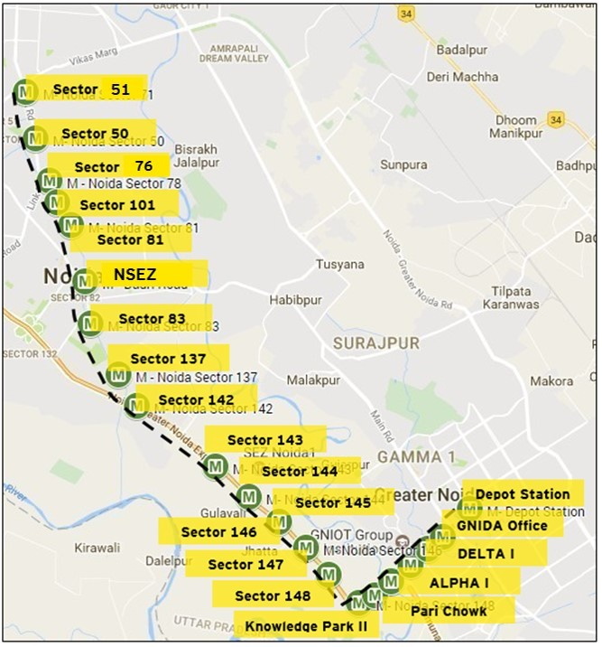

Housekeeping and
Contract Management
Noida Metro Rail Corporation
Noida Metro Rail Corporation

Package
- HK-C1 SEC 51 -SEC 83 ( V- INSPIRE)
- HK-C2 SEC 137-SEC 147 ( M3S)
- HK-C3 SEC 148-DEPOT STATION (V- INSPIRE)
Station Controller Focus Areas
Daily Custody & Ledger
Keep chemicals, toilet supplies, and consumables in custody. Issue them strictly as per daily requirement and maintain a meticulous daily ledger.
Permits to Work (PTW)
Review and issue special Permits to Work for hazardous tasks, including platform roof ceiling cleaning or working near the 25kV traction area.
Verification & Attendance
Sign the shift-wise cleaning monitoring booklets, verify biometric attendance of staff in the control room, and validate monthly bills.
Package 02 Overview
Contract at a Glance
Extendable by 6 months after performance review
Major washing and detailed cleaning in non-operational hours
Major cleaning to be completed between 00:00 and 05:30
Includes 1 hour break; shift timings fixed by NMRC
Cleaning Services
- Cleaning of station premises
- Cleaning of circulating area
- Cleaning of roads under NMRC station
- Cleaning of track plinth
- Minor plumbing in station premises
- Pest control
- Cleaning and attention of all drainage at station
Cleaning Services (contd.)
- Cleaning of light fixtures, fan, DG room; cleaning of AC
- Cleaning of HT and LT panel under supervision of NMRC staff
- Cleaning of washroom, X-ray machine, notice board, signage
- Telephone, security equipment, fire hydrant and pumps
Scope of Work: Areas Covered
Areas
- Concourse and platform
- Passages and staircases
- Circulating area incl. foot over bridges
- Pavement and roads under NMRC
- All rooms and corridors
- Bathrooms and toilets
- Parking area
Also included
- Track plinth washing (block period, prior permission only)
- Water tank cleaning (underground & overhead)
- Toilet sanitation incl. supply of items
- Minor plumbing and drain attention
- Light pest, mosquito and rodent control
- Cleaning of traction, E&M, signalling, telecom and AFC items
Cleaning of Electrical and Signalling Areas
| Area | Rule |
|---|---|
| HT and LT equipment (ASS room) | Outer louvers only, dry cleaning, in presence of NMRC authorised representative |
| LT equipment (LT switch room) | Outer body only, no live portion, dry cleaning |
| UPS room | No operational service to be disrupted |
| Signalling room | Normally closed; special permit from NMRC authorised representative |
| Telecom room (PIS, CCTV, master clock, fibre optics, telephones) | Special permit; very careful cleaning |
| AFC equipment (gates, TVMs, station computers, panels) | Special permit from NMRC authorised representative |
| Station control room, booking offices, EFO | Suitable cleaning with all necessary precautions |
| DG room | Flammable items present; extra care |
| Air conditioners | Outer body and louvers only |
| Escalators | Manufacturer’s procedure; steps and balustrade only as permitted |
| All electrical equipment | Trained staff under NMRC supervision; gloves and safety shoes |
Do’s
- In case of fire / anything unusual on electric traction equipment or wires, inform the Station Controller / Manager.
- Extinguish fire by special extinguishers (carbon tetrachloride or carbon dioxide type, if available).
- Ensure no water jet is directed at the fire under any circumstances.
- Before taking up work on a line running parallel to 25 kV AC lines, the line shall be earthed on both sides. Ensure the distance between the two earths used for protection does not exceed 1 km.
- Keep clear of the track and avoid contact with the rails when an electric train is within 250 m.
- Take special care when carrying long pipes, poles or ladders so they do not come in contact with, or within 2 m of, live OHE.
- Cleaning work other than surface cleaning (i.e. of beams, pillars etc.) should be done during block period only.
- Whenever washing or cleaning using water jets is done, take appropriate power block.
- Report cases of electric shock from contact with 25 kV AC traction equipment immediately to TPC.
Don’t
- Do not approach within 2 m of any traction wires or live equipment.
- Do not work on or near traction wires or any live equipment unless they are made dead, earthed and shut down notices / permit to work obtained.
- Do not enter any switching station or remote control centre unless specially permitted.
- Do not touch a person in contact with live traction wires. Remove the body only after power supply is switched off and earthed.
- Do not touch any traction wire hanging from the mast or fallen on the ground, and do not allow anyone else to touch it.
- Avoid cleaning with conducting materials like aluminium / steel rods at all times when power block is not availed.
- Do not lift or raise your tools towards traction wires.
- Do not damage the plinth continuity, connection to BEC, OPC and handrail continuity.
- Do not use steel tape, metallic tape or tape with woven metal reinforcement in an electrified area.
- Do not forget to give artificial respiration to the victim as per the procedure laid down in the shock treatment charts.
- Metallic telescopic rods are prohibited for use in NMRC stations.
Cleaning Near 25 kV Traction: Permits
- Platform roof ceiling: non-operational hours only, with shadow power block and permit to work (PTW) from the Station Controller.
- Lighting fixtures near platform arches and the 25 kV AC system: shadow power block and PTW from operations staff.
- Track plinth: non-operational hours only, special permit from NMRC authorised representative. One or both rails may carry traction return current.
- Do not disturb track arrangement or traction, E&M, signalling or communication equipment near the track.
- Platform drains in operating hours: only with permission of NMRC authorised person and safety signage.
Obligation of Corporation
Control roomOne room at the designated location, to be utilised as control for day-to-day operational requirement, with sufficient lighting arrangement.
CommunicationCommunication facility, i.e. intercom and wireless sets, to the personnel as per NMRC’s assessment.
Security Measure
TheftIf any employee of the contractor is caught stealing any property of NMRC, a fine of ₹50,000/- shall be imposed.
ID & UniformContractor employees shall wear I-card, uniforms and other applicable safety gear.
Security Measure
Accidents
ResponsibilityIt shall be the entire responsibility of the contractor to adopt all the safety measures and deploy cleaning personnel who are adequately trained in safety. If any accident occurs within the station area due to cleaning and housekeeping operations, or due to negligence on the part of the contractor’s personnel, it shall be the full responsibility of the contractor.
General Indemnity
IndemnityThe Contractor shall indemnify and hold harmless NMRC from and against all actions, suits, proceedings, claims, damages, losses, expenses and demands of every nature and description, by reason of any act or omission of the Contractor, his representative or his employees in the execution of the Services. These indemnification obligations shall include, but not be limited to, claims, damages, losses, damage proceedings, charges and expenses which are attributable.
Who Provides What
| NMRC provides | Contractor provides |
|---|---|
| Control room at designated location, with lighting | All tools, machines and equipment, with spares and spare batteries |
| Intercom and wireless sets | Chemicals, reagents and consumables (liquid soap, dispensers, tissue) |
| Water supply and electricity from nominated points | Uniforms, ID badges and PPE, free of cost |
| Right of way within NMRC land | Dustbins and vehicles for waste disposal |
| – | Mobile phones / WLL for Team Leader and Supervisors |
| – | Own housing for staff; own battery chargers |
Role of Station Manager / Controller
- BookletSign the cleaning monitoring booklet in the station control room each shift (the contractor’s supervisor signs too).
- CustodyHold chemicals and consumables in custody, issue them as per daily requirement and keep a daily ledger.
- DisplayCheck that the cleaning schedule is displayed in toilets and inspected.
- AttendanceEnsure staff mark biometric attendance in the control room at start and end of shift.
- PTWIssue permit to work for platform roof ceiling cleaning.
- Bill checkVerify the monthly summary of activities on which the contractor raises the bill.
- ManpowerSign requisitions for additional manpower.
Penalties
| Item | Penalty |
|---|---|
| Poor housekeeping (improper cleaning / sanitation, drain blockage) | Spot fine ₹2,000 – ₹5,000 |
| Average or Poor grade in surprise inspection | ₹10,000 or ₹15,000 |
| Rodent damage to station equipment | ₹2,500 |
| Short deployment of staff | Daily wages for short deployment + ₹1,000 each |
| Short deployment of machinery / under-capacity machine | ₹1,000 per day per case; repair breakdown within 48 hours |
| Employee caught stealing NMRC property | ₹50,000 + cost of material + police action |
| Theft or loss of sanitary and water fittings | Suitable penalty; total penalties capped at 10% of contract value |
| Staff death: welfare deposit provisions violated | 5% of average annual contract value |
Payments and Performance Assessment
- Bills are raised on a monthly summary of activities, verified by Station Managers; payment is for actual quantity of work executed.
- NMRC officials inspect at least weekly. Monthly audit of tools, machinery and chemical use on a fixed date, plus surprise inspections.
- Penalties are deducted from monthly bills, in addition to deductions for work not done.
- Minimum wage / VDA revisions are compensated by NMRC; 5% per annum escalation on machinery, chemical and consumable charges.
Housekeeping Appearance and Requirements
- UniformThe housekeeping personnel shall dress in neat, clean and prescribed uniform with a proper name badge prominently displayed.
- System awarenessThe housekeeping personnel shall acquaint themselves with the station systems at their respective Noida Metro stations / other installations.
- Police verificationThe character and antecedents of all housekeeping personnel and supervisors shall be verified from the local police authorities before being deployed in the NMRC system.
Qualifications and Identity
| Role | Minimum qualification | Minimum experience |
|---|---|---|
| Team Leader / Manager | Graduation | 5 years |
| Supervisor | Graduation | 3 years |
| Housekeeping staff | 8th standard | – |
Deployment
DeploymentDeployment of minimum manpower as mentioned in Form 14: Deployment of Personnel, along with CVs of the Team Leaders and Supervisors. Each CV shall carry a current photograph and be signed by the person, and shall be submitted duly verified by the contractor. Each CV shall contain the following information, but not limited to:
- NameName in full
- FatherFather’s name
- DOBDate of birth
- AddressPresent address
Deployment (contd.)
- PermanentPermanent address
- EducationEducational qualification
- AadhaarAadhaar card number
- ExperienceCleaning and housekeeping experience
- OtherAny other experience
Minimum Manpower per Day
| Station | Supervisor (1 per shift) | Morning | Evening | Night |
|---|---|---|---|---|
| Noida Sector 137 | 3 | 4 | 4 | 5 |
| Noida Sector 142 | 3 | 4 | 4 | 5 |
| Noida Sector 143 | 3 | 3 | 3 | 5 |
| Noida Sector 144 | 3 | 3 | 3 | 5 |
| Noida Sector 145 | 3 | 3 | 3 | 5 |
| Noida Sector 146 | 3 | 3 | 3 | 6 |
| Noida Sector 147 | 3 | 3 | 3 | 5 |
| Noida Sector 148 | 3 | 3 | 3 | 5 |
| RSS Sec-148 | 0 | 0 | 0 | 0 |
| Total | 24 | 26 | 26 | 41 |
Mobilisation Timeline
Submit CVs and deployment, machinery list, chemical list with MSDS, cleaning procedures
Work starts within 7 days of acceptance, irrespective of approval
Advance notice and NMRC approval, with CVs
Failure to commence is an event of default
Labour Law Compliance
| Item | Requirement |
|---|---|
| Wages | Paid by 7th of each month, not below Central minimum wages, in presence of employer representative; wage slip one day before |
| PF | On minimum wages up to ₹15,000 ceiling; deposit within 7 days of month end |
| ESI | Staff drawing up to ₹21,000 per month covered |
| Working time | Weekly rest day; double-rate overtime beyond 9 hours a day or 48 hours a week |
| Documents | Employment card (Form XIV) within 3 days; service certificate (Form XV) at exit |
| Notices and registers | Wage notices in English and Hindi; registers for employment, muster, wages, deductions, fines, advances, overtime |
| Insurance | Third-party cover of at least ₹7.5 lakh per incident, in joint names |
| Death of staff | Contractor deposits ₹1,00,000 in NMRC welfare fund; NMRC releases ₹2,00,000 immediate relief |
Special Conditions for Cleaning
Passenger safetyCleaning and housekeeping works in the stations are to be carried out with special care during commercial hours, so that passenger movement is not affected, no accident is caused to personnel or passengers, and all areas of the station always present a perfectly clean appearance. Tentative shift timings:
BreaksEach shift includes a one-hour break. Shifts and breaks may be staggered to ensure continuous availability of cleaning and housekeeping personnel.
Special Conditions for Cleaning
Cleaning reagents
Environment-friendly reagents / detergents to be used to the extent possible. They should be free from chemical reactions, odourless, and must not affect commuters, employees, materials or equipment. Employer’s approval must be obtained before use.
Submission within 3 days of award
Final list of eco-friendly reagents / detergents / chemicals with technical details and test reports. Also details of disinfectants and pest / rodent control chemicals with full technical details, for approval.
Cleaning & Housekeeping Machinery / Equipment
- Machines and equipment shall have adequate capacity so that all operations are comfortably completed during non-operational hours and shift hours.
- Machinery used in passenger areas (circulating area, concourse, staircases, platforms etc.) shall be battery operated. The contractor must use his own battery chargers.
- Machinery shall be energy efficient, draw current in proportion to machine capacity, and be well maintained.
- Only adequately trained personnel shall use the machines and equipment.
Inspection Parameters
| Sl. | Parameter | Inspection |
|---|---|---|
| 1 | Shine level | Measured with a reference gloss meter at 10 locations, once daily |
| 2 | Dust level | Measured with a reference white blotting paper rubbed on floor at 10 locations, once daily |
| 3 | Foot marks | Inspected once daily |
| 4 | Paan and gutka stains | Inspected once daily |
| 5 | Bird droppings | Inspected once daily |
| 6 | Water hardness marks | Inspected once daily |
Grading Scale for Floors
| Parameter | Excellent | V. Good | Good | Average | Poor |
|---|---|---|---|---|---|
| Shine level (gloss meter) | > 70 | 70 – 60 | 60 – 50 | 50 – 40 | < 40 |
| Dust level (blotting paper) | No dust | 75% | 60% | 50% | < 50% |
| Foot marks per sqm | None | 2 – 3 | 4 – 6 | 7 – 9 | > 10 |
| Paan / gutka stains, bird droppings | None | – | – | – | Any |
| Points | 10 | 8 | 6 | 5 | 3 |
Pest Control
General pest control
Treatment for cockroaches, lizards, flies and ants, silverfish and all other flying / crawling pests; honey bee control.
Rodent / carpet treatment
Household Rodent, Climbing rats, sewer rats, Bandit coots Carpet beetles; Pesticide used should not leave any strain on the carpet.
Toilet Cleaning and Sanitation
- Swept every 3 hours; kept clean and hygienic
- Lost or damaged fittings made good within 24 hours
- Drains and sewer lines cleaned regularly; blockages and leaks attended immediately
- Liquid soap, tissue and odour control supplied by contractor
| Inspect | Best | Worst |
|---|---|---|
| Mirrors | No water marks | Thick deposits |
| Wash basins | Sparkling clean | Dirty |
| WC seats | Sparkling clean | Any marks |
| Floor | Clean and dry | Dirty |
| Odour | Fragrance | Smell |
Removal / Disposal of Garbage, Debris and Waste
Collected garbage, debris and waste shall be disposed of at pre-approved locations in closed condition, by arranging a vehicle at the contractor’s end daily / as required by the Station Manager, without causing inconvenience to anybody.
Dustbins and Waste Handling
- Contractor supplies small and big transparent dustbins; sample approved by NMRC.
- Dustbins only in waste collection / refuse room; each lined with a biodegradable bag.
- Bins emptied into bigger bins when full; bigger bins sealed and moved to pre-approved location.
- Spare dustbins kept for rotation; bins washed daily.
- Transport and disposal only in sealed condition.
Station-wise Details
| SN | Name of station | Type | Staircases, lifts and escalators | ||
|---|---|---|---|---|---|
| Lift (incl. PD area lifts) | Escalator | Staircase (incl. fireman, pump room) | |||
| 1 | Noida Sector 137 | 1B | 3 | 3 | 7 |
| 2 | Noida Sector 142 | 3 | 4 | 4 | 7 |
| 3 | Noida Sector 143 | 1 | 4 | 4 | 7 |
| 4 | Noida Sector 144 | 1 | 4 | 4 | 6 |
| 5 | Noida Sector 145 | 1 | 4 | 4 | 6 |
| 6 | Noida Sector 146 | 1 | 4 | 4 | 6 |
| 7 | Noida Sector 147 | 1 | 4 | 4 | 6 |
| 8 | Noida Sector 148 | 1 | 4 | 4 | 6 |
Station-wise Details of Washrooms
| SN | Name of station | Type | Number of washrooms (WC) | ||
|---|---|---|---|---|---|
| Ladies | Gents | Handicap | |||
| 1 | Noida Sector 137 | 1B | 2 | 2 | 1 |
| 2 | Noida Sector 142 | 3 | 2 | 2 | 1 |
| 3 | Noida Sector 143 | 1 | 2 | 2 | 1 |
| 4 | Noida Sector 144 | 1 | 2 | 2 | 1 |
| 5 | Noida Sector 145 | 1 | 2 | 2 | 1 |
| 6 | Noida Sector 146 | 1 | 2 | 2 | 1 |
| 7 | Noida Sector 147 | 1 | 2 | 2 | 1 |
| 8 | Noida Sector 148 | 1 | 2 | 2 | 1 |
| 9 | RSS Sector 148 | 1 | 1 | 1 | 1 |
Cleaner’s Room and Glass Cleaning Area
| SN | Name of station | Type | Cleaners room | Glass cleaning area (sqm) | |||
|---|---|---|---|---|---|---|---|
| Location | Size (sqm) | TOM (incl. door) | SCR | EFO | |||
| 1 | Noida Sector 137 | 1B | Concourse | 12.43 | 13.31 | 15.375 | 18.00 |
| 2 | Noida Sector 142 | 3 | Concourse | 12.43 | 13.31 | 15.375 | 18.00 |
| 3 | Noida Sector 143 | 1 | Concourse | 12.43 | 13.31 | 15.375 | 18.00 |
| 4 | Noida Sector 144 | 1 | Concourse | 12.43 | 13.31 | 15.375 | 18.00 |
| 5 | Noida Sector 145 | 1 | Concourse | 12.43 | 13.31 | 15.375 | 18.00 |
| 6 | Noida Sector 146 | 1 | Concourse | 12.43 | 13.31 | 15.375 | 18.00 |
| 7 | Noida Sector 147 | 1 | Concourse | 12.43 | 13.31 | 15.375 | 18.00 |
| 8 | Noida Sector 148 | 1 | Concourse | 12.43 | 13.31 | 15.375 | 18.00 |
Water Taps and Electric Sockets
| SN | Name of station | Type | Water taps for wet cleaning | Electric sockets for cleaning machines | ||||
|---|---|---|---|---|---|---|---|---|
| Platform (both) | Concourse (cleaners room) | Platform 16 A | Platform 32 A | Concourse 16 A | Concourse 32 A | |||
| 1 | Noida Sector 137 | 1B | 4 | 1 | 8 | 2 | 6 | 2 |
| 2 | Noida Sector 142 | 3 | 4 | 1 | 8 | 2 | 6 | 2 |
| 3 | Noida Sector 143 | 1 | 4 | 1 | 8 | 2 | 6 | 2 |
| 4 | Noida Sector 144 | 1 | 4 | 1 | 8 | 2 | 6 | 2 |
| 5 | Noida Sector 145 | 1 | 4 | 1 | 8 | 2 | 6 | 2 |
| 6 | Noida Sector 146 | 1 | 4 | 1 | 8 | 2 | 6 | 2 |
| 7 | Noida Sector 147 | 1 | 4 | 1 | 8 | 2 | 6 | 2 |
| 8 | Noida Sector 148 | 1 | 4 | 1 | 8 | 2 | 6 | 2 |
Station-wise Area Details
| SN | Name of station | Area (sqm): ground, concourse, platform, entry, FOB, pump / DG and external development (excl. PD area) |
|---|---|---|
| 1 | Noida Sector 137 | 8,878.76 |
| 2 | Noida Sector 142 | 6,655.58 |
| 3 | Noida Sector 143 | 7,901.86 |
| 4 | Noida Sector 144 | 7,316.34 |
| 5 | Noida Sector 145 | 6,507.34 |
| 6 | Noida Sector 146 | 6,612.34 |
| 7 | Noida Sector 147 | 7,574.34 |
| 8 | Noida Sector 148 | 6,691.20 |
Statutory Compliance After Award of Works
| Sr. | Items |
|---|---|
| 1 | License for employing contract labour |
| 2 | Compliance with the Minimum Wages Act: payment of wages on the 7th of every month through bank, or in the presence of a nominated employer representative (NMRC Supervisor / Manager) |
| 3(a) | Compliance with provisions of the ESI and EPF Acts |
| 3(b) | Ensure treatment in ESI hospital in case of accident / injury in performance of work, and compensation under the ESI Act |
| 4 | Send accident report to the Regional Labour Commissioner (RLC) and authorities |
| 5 | Observance of working hours, weekly rest and overtime payments as per minimum wages of the State |
Machines and Equipment to be Deployed
| Sr. | Machinery / equipment required | Minimum number |
|---|---|---|
| 1 | Cold water high pressure jet | 2 |
| 2 | Battery-operated walk-behind automatic scrubber dryer | 1 |
| 3 | Electrically operated walk-behind automatic scrubber dryer | 2 |
| 4 | Single disc floor scrubbing machine | 2 |
| 5 | Wet and dry vacuum cleaner | 3 |
| 6 | Hand-held scrubbing machine for vertical surfaces | 2 |
| 7 | Backpack dry vacuum cleaner | 2 |
| 8 | Automatic escalator cleaner cum automatic scrubber dryer | 2 / 7 (two machines for all 8 stations) |
| 9 | Escalator cleaner (Wizard) | 1 |
| 10 | Manual sweeper with built-in manual vacuum system | 2 |
| 11 | Steam cleaner | 1 |
Machines and Equipment (contd.)
| Sr. | Machinery / equipment required | Minimum number |
|---|---|---|
| 12 | Window glass cleaning kit with 20 ft extendable non-metallic telescopic pole | 1 |
| 13 | Twin bucket wet mopping trolley with wringer for large areas | 2 |
| 14 | Complete dry mopping system with swivel frame and non-metallic rod with microfibre base | 4 |
| 15 | Complete wet mopping system with Kentucky mop head and non-metallic rod | 1 |
| 16 | Complete damp mopping system with swivel frame, non-metallic rod and microfibre base | 1 |
| 17 | Microfibre cloth | 50 |
| 18 | Floor signage | 2 |
| 19 | Carry basket for housekeeping utility / chemicals | 4 |
| 20 | Covered dust pan with broom | 2 |
| 21 | Floor squeegee | 2 |
| 22 | Folding / hydraulic ladder to reach areas above normal height | 2 |
Specified Chemicals and Other Consumables
| Sr. | Purpose | Chemical | Min. qty / month / station (L) |
|---|---|---|---|
| 1 | Granite / Kota / marble / vinyl and all other flooring except wooden – cleaning concentrate | J Flex Stride / Eco Zan BK Conc-S5 / A. Mela Klean Fix K2 | 4 |
| 2 | Bathroom / washroom / toilet floor cleaning | J Flex Stride / Eco Zan BK Conc-S5 / A.Mela | 4 |
| 3 | General Washroom Cleaning | J Flex Stride / Eco Zan BK Conc-S5 / A.Mela | 3 |
| 4 | Vertical finishes (Granite/Marble/steel) | J Flex Stride / Eco Zan BK Conc-S5 / A.Mela | 5 |
| 5 | Glass / mirror / acrylic surface | J Flex Glance (non-ammoniated) / S3 / Plural Ecolabel | 1 |
| 6 | Steel surfaces | Suma Inox / Echo De Lime / Plural Plus | 5 |
| 7 | Urinal and WC cleaner | TASKI R6 / Echo Flush / WC Rein | 5 |
| 8 | Pest control – cockroaches (tube of 75 gm each) | Kilspot Nova | 2 (nos.) |
| 9 | Pest control – mosquito, flies, ants, lizard and other flying / crawling pests | Flyco 20EC | 10 |
| 10 | Air freshener | J Flex Goodsense / Echo Fresh RF / POM Essence | 0.5 |
| 11 | Refill for auto dispenser for odour control | Good Sense Refill | 15 (nos.) |
| 12 | Hand wash | Liquid soap | As per site requirement |
| 13 | Toilet paper | Toilet paper roll | As per site requirement |
Deduction Rates
| # | Chemical / consumable | ₹ / litre / month |
|---|---|---|
| 1 | Granite / Kota / marble floor concentrate | 400 |
| 2 | Bathroom / toilet floor cleaner | 500 |
| 3 | General washroom cleaner | 500 |
| 4 | Vertical finishes | 400 |
| 5 | Glass / mirror / acrylic | 400 |
| 6 | Steel surfaces | 400 |
| 7 | Aluminium surfaces | 400 |
| 8 | Other surfaces (not wooden / porous) | 400 |
| 9 | Urinal and WC cleaner | 600 |
| # | Chemical / consumable | ₹ / litre / month |
|---|---|---|
| 10 | Pest control: cockroaches | 1,500 |
| 11 | Pest control: mosquito, flies, ants, lizard | 2,500 |
| 12 | Air freshener | 2,000 |
| 13 | Refill for auto dispenser | 500 |
| 14 | Oil and grease remover | 400 |
| 15 | Spot remover | 400 |
| 16 | Glass scale remover | 400 |
| 17 | Liquid soap | 500 |
| 18 | Toilet paper roll | 300 |
Detailed Schedule of Activities (1/3)
| # | Activity | Frequency | Weightage % |
|---|---|---|---|
| 1 | Scrubbing and wet cleaning of floors: concourse, platform, passages, stairs | Each shift | 60.00 |
| 2 | Floors of operation and utility rooms (SCR, TOM, ASS, EFO etc.) | Daily | 8.00 |
| 3 | Wall cladding finishes | Daily | 4.00 |
| 4 | Doors, windows, frames, shutters, louvers | Daily | 1.50 |
| 5 | Glass at doors, windows, ticket counters | Daily | 3.50 |
| 6 | Rolling shutters | Daily | 0.50 |
| 7 | SS / PVC / MS hand railing | Daily | 1.75 |
| 8 | Suspended ceiling | Fortnightly | 1.00 |
| 9 | Roof ceiling | Monthly | 3.00 |
| 10 | Toilets and bathrooms | Each shift | 2.00 |
| 11 | Drains at all levels | Daily | 0.75 |
| 12 | Track plinth (power block by NMRC) | 20 days a month | 0.60 |
| 13 | Fire extinguishers, smoke and fire detectors | Fortnightly | 0.20 |
| 14 | Fire pump panel | Fortnightly | 0.10 |
Detailed Schedule of Activities (2/3)
| # | Activity | Frequency | Weightage % |
|---|---|---|---|
| 15 | Butterfly / landing valves, hydrants, fire piping | Fortnightly | 0.20 |
| 16 | Indoor light fittings | Weekly | 0.20 |
| 17 | Switch boards, panels, distribution boards | Weekly | 0.20 |
| 18 | Fans and exhaust fans | Fortnightly | 0.10 |
| 19 | External lighting fittings | Fortnightly | 0.20 |
| 20 | Escalators | Daily | 1.00 |
| 21 | Lifts | Daily | 1.00 |
| 22 | Computers, telephones, misc. items | Daily | 0.30 |
| 23 | Furniture and office equipment | Daily | 0.30 |
| 24 | DG room with DG set | Weekly | 0.20 |
| 25 | HT and LT equipment in ASS room | Weekly | 0.75 |
| 26 | LT equipment in LT switch room | Weekly | 0.30 |
| 27 | UPS room equipment | Weekly | 0.30 |
| 28 | Pump room | Weekly | 0.30 |
Detailed Schedule of Activities (3/3)
| # | Activity | Frequency | Weightage % |
|---|---|---|---|
| 29 | Signalling room equipment | Weekly | 0.30 |
| 30 | SCR, booking offices, EFO equipment | Weekly | 0.30 |
| 31 | Cable trays, trench covers, undercroft | Weekly | 0.40 |
| 32 | Air conditioners | Weekly | 0.20 |
| 33 | Telecom room equipment | Weekly | 0.25 |
| 34 | AFC, TVM, security equipment | Daily | 0.60 |
| 35 | Water tanks (underground / overhead) | Monthly | 0.30 |
| 36 | Pavement and circulating area, subway, FOB | Daily | 4.00 |
| 37 | Sign, name, notice and advertisement boards | Weekly | 0.50 |
| 38 | Supply of dustbins and biodegradable bags | Daily | 0.20 |
| 39 | Disposal of waste; cleaning of dustbins | Daily | 0.20 |
| 40 | Light pest control (non-operational hours) | Monthly | 0.50 |
Thank you
Noida Metro Rail Corporation · Housekeeping and Contract Management (Package 02)